КЫРГЫЗ РЕСПУБЛИКАСЫНЫН
УЛУТТУК БАНКЫ
Негизги жаңылыктар
05.06.2025
Кыргыз Республикасынын Улуттук банкында 2025-жылдын 5-июнунда Улуттук банктын төрагасынын орун басары...
Толугураак...04.06.2025
Кыргыз Республикасынын Улуттук банкы жана Кытай Эл Банкы кызматташууну кеңейтүү маселесин...
Толугураак...13.05.2025
2025-жылдын 16-майында Улуттук банк Эл аралык музейлер күнүнө карата бардык жарандарды чакырат...
Толугураак...ЖАҢЫЛЫКТАР УБКР
Жарыяланган күнү: 02.06.2025
Кыргыз Республикасынын Улуттук банкы менен Бахрейн Королдугунун Борбордук банкы кызматташуу тууралуу Меморандумга кол коюшту
2025-жылдын 1-июнунда Манама шаарында (Бахрейн Королдугу) Кыргыз Республикасынын Улуттук банкынын төрагасы Мелис Тургунбаев менен Бахрейн Королдугунун Борбордук банкынын төрагасы Халид Ибрагим Хумаидан расмий жолугушуу өткөрдү.
Кыргыз Республикасынын Улуттук банкынын төрагасынын иш сапары Кыргыз Республикасынын президентинин Бахрейн Королдугуна жасаган мамлекеттик сапарынын алкагында жетишилген макулдашуулардын уландысы болду. Президенттик сапардын алкагында тараптар эки тараптуу өнөктөштүктү чыңдоого кызыкдар экенин тастыкташып, финансы-экономикалык чөйрөдө кызматташууну өнүктүрүүгө макул болушкан. Банктар аралык Меморандумга кол коюу жогорку деңгээлде жетишилген макулдашуулардын алгачкы практикалык кадамы болуп калды.
Жолугушуунун жүрүшүндө тараптар борбордук банктардын жана Кыргыз Республикасы менен Бахрейн Королдугунун каржы мекемелеринин ортосундагы кызматташууну тереңдетүү маселелерин талкуулашты. Айрыкча банктык жөнгө салуу, каржы рынокторун өнүктүрүү жана ислам финансысын илгерилетүү мүмкүнчүлүктөрү боюнча тажрыйба алмашууга өзгөчө көңүл бурулду.
Жолугушуунун негизги жыйынтыгы болуп Кыргыз Республикасынын Улуттук банкы менен Бахрейн Королдугунун Борбордук банкынын ортосунда кызматташтык боюнча Меморандумга кол коюу болуп, ал эки өлкөнүн ортосунда стратегиялык өнөктөштүк жана узак мөөнөттүү кызматташтык үчүн бекем институционалдык негиз түзөт.
Меморандумга кол коюу кыргыз-бахрейн мамилелеринин тарыхындагы жаңы баракты ачкан маанилүү окуя болуп саналат. Документ борбордук банктардын негизги иш багыттары боюнча кызматташууну кеңейтүүгө багытталган аракеттерди, анын ичинде биргелешкен изилдөөлөрдү, адистердин квалификациясын жогорулатуу, акча-кредит саясаты жаатындагы маалымат алмашуу жана ислам банкингинин принциптерин илгерилетүү жана ишке ашырууну бекемдейт.
Дүйнөлүк экономикадагы ислам финансысынын ролу өсүп жаткандыгын эске алуу менен, Бахрейн Королдугу — ислам финансысынын эл аралык таанылган борборлорунун бири катары — Кыргыз Республикасы үчүн бул багытта мыкты тажрыйбаларды киргизүүгө жана шариат принциптерине ылайык инвестицияларды тартууну жандандырууга уникалдуу мүмкүнчүлүк берет.
Кыргыз Республикасынын Улуттук банкы Меморандумга кол коюуну банктар аралык өз ара аракеттенүүнү чыңдоодо маанилүү кадам катары гана эмес, Кыргыз Республикасы менен Бахрейн Королдугунун ортосундагы экономикалык жана каржылык диалогду өнүктүрүүгө кошкон салым катары да карайт.

.jpeg)
Жарыяланган күнү: 30.05.2025
1. Кыргыз Республикасынын Улуттук банкы 2025-жылдын 29-майында Ачык акционердик коом «Элдик Банк» тарабынан директорлор кеңешинин мүчөлүгүнө сунушталган Полотова Жылдыз Арстанбековнаны макулдашуу тууралуу чечим кабыл алды.
2. Кыргыз Республикасынын Улуттук банкы 2025-жылдын 29-майында Ачык акционердик коом «Керемет Банк» тарабынан башкы бухгалтерликке сунушталган Атамкулова Бурулкан Токтоналиевнаны макулдашуу тууралуу чечим кабыл алды.
3. Кыргыз Республикасынын Улуттук банкы 2025-жылдын 29-майында Ачык акционердик коом «Керемет Банк» тарабынан башкы бухгалтердин орун басарлыгына сунушталган Отунчиева Алтынды макулдашуу тууралуу чечим кабыл алды.
4. Кыргыз Республикасынын Улуттук банкы 2025-жылдын 29-майында Ачык акционердик коом «Айыл Банк» тарабынан директорлор кеңешинин мүчөлүгүнө сунушталган Гайпкулов Искендер Торобаевичти макулдашуу тууралуу чечим кабыл алды.
5. Кыргыз Республикасынын Улуттук банкы 2025-жылдын 29-майында Ачык акционердик коом «О!Банк» тарабынан башкы бухгалтерликке сунушталган Усупбаева Нуршат Токтогуловнаны макулдашуу тууралуу чечим кабыл алды.
6. Кыргыз Республикасынын Улуттук банкы 2025-жылдын 29-майында Ачык акционердик коом Банк «Бай-Тушум» тарабынан ички аудит кызматынын жетекчи орун басарлыгына сунушталган Кутунаев Адилет Жолоновичти макулдашуу тууралуу чечим кабыл алды.
7. Кыргыз Республикасынын Улуттук банкы 2025-жылдын 29-майында Ачык акционердик коом Банк «Бай-Тушум» тарабынан ички аудит кызматынын жетекчилигине сунушталган Байсеитов Бакытбек Толосуновичти макулдашуу тууралуу чечим кабыл алды.
8. Кыргыз Республикасынын Улуттук банкы 2025-жылдын 29-майында Ачык акционердик коом «Дос-Кредобанк» тарабынан башкармалыктын мүчөлүгүнө сунушталган Исаев Адилет Жолдошбековичти макулдашуу тууралуу чечим кабыл алды.
Жарыяланган күнү: 30.05.2025
2025-жылдын 30-майында Кыргыз Республикасынын Улуттук банкынын төрага орун басары М. Аттокуров Бишкек эл аралык каржы форумуна BIFF-2025: «Инновациялар, санариптик трансформация жана туруктуу өнүгүү: каржы экосистемасынын келечеги» катышты.
Өз сөзүндө Улуттук банктын төрага орун басары санариптик трансформация маселеси актуалдуу гана болбостон, өлкөнүн туруктуу өсүшү үчүн өтө маанилүү экенин белгиледи. Ошондой эле М. Аттокуров заманбап технологиялар зор мүмкүнчүлүктөрдү гана эмес, жаңы чакырыктарды да жаратат деп кошумчалады.
«Улуттук банк бул өзгөрүүлөргө каржы системасын ыңгайлаштыруунун маанилүүлүгүн түшүнөт. Технологиялар тездик менен өнүгүп жаткан шартта Улуттук банктын инновацияларды киргизүүгө, каржы кызматтарын санариптештирүүгө жана алардын жеткиликтүүлүгүн жогорулатууга көмөктөшкөн жөнгө салуучу чөйрөнү түзүү боюнча жүргүзүп жаткан иштеринин маанилүүлүгүн баса белгилөө керек», – деди Улуттук банктын төрага орун басары.
Ошондой эле М. Аттокуров киберкоркунучтардын көбөйүшү менен Улуттук банктын артыкчылыктуу багыттарынын бири — каржы кызматтарын пайдалануучулардын коопсуздугун камсыз кылуу жана алдамчылык операциялардан коргоо экенин белгиледи.
Жолугушууга катышкан тараптар санариптик каржы кызматтары, киберкоопсуздук, инновациялык экосистеманы өнүктүрүү жана башка актуалдуу маселелерди талкуулашты.
Форумга Кыргыз Республикасынын Министрлер Кабинетинин төрагасы А. Касымалиев, эл аралык уюмдардын өкүлдөрү, Кыргыз Республикасынын банктар жана каржы сектору, ошондой эле чет элдик адистер катышты.
 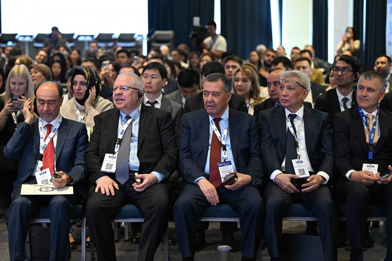
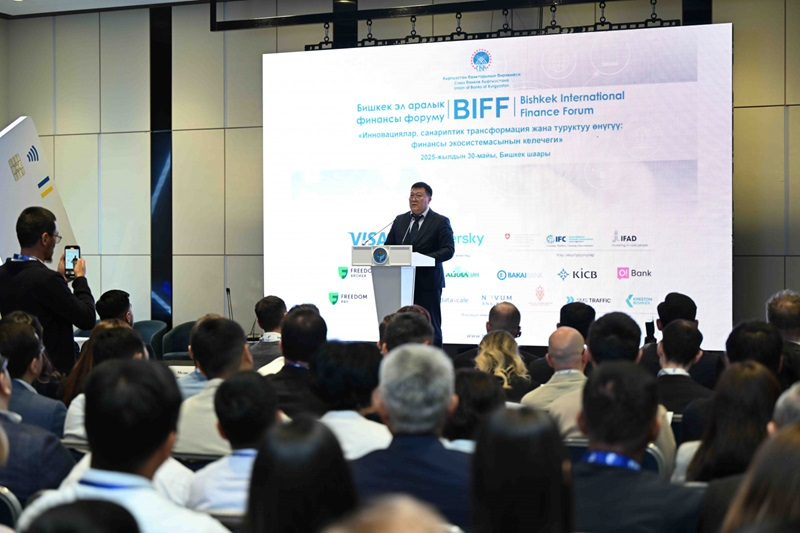
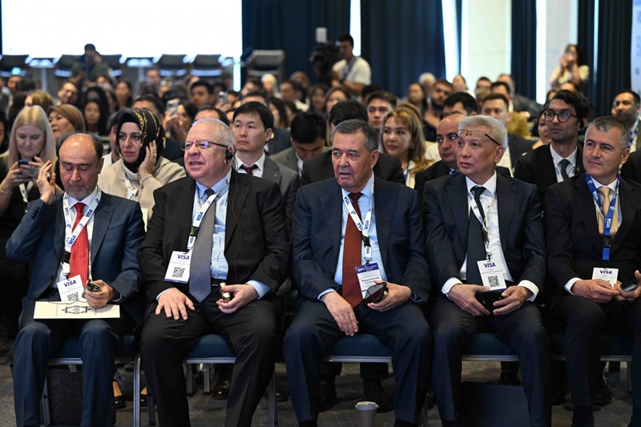
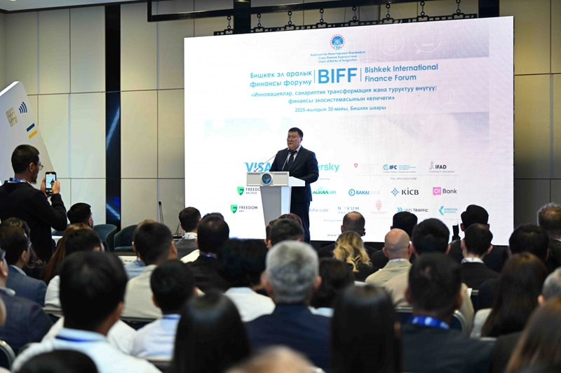
.jpeg)
.jpeg)
Жарыяланган күнү: 13.05.2025
Кыргыз Республикасынын мыйзамдарын жана Улуттук банктын нормативдик-укуктук актыларын бузгандыгы үчүн төлөм уюмуна эки ирет айып салынды — ар бири 55 000 сомдон, жалпысынан 110 000 сом.
Жарыяланган күнү: 13.05.2025
2025-жылдын 30-апрелинде Кыргыз Республикасынын Улуттук банкынан төмөнкү токтомдор кабыл алынды:
- «Төлөм уюмдары менен төлөм системаларынын операторлорунун уставдык капиталынын минималдуу өлчөмү жөнүндө» № 2025П14/20-1(ПС);
- «Кыргыз Республикасынын Улуттук банкынын айрым нормативдик укуктук актыларына өзгөртүүлөрдү киргизүү жөнүндө» № 2025П14/20-2(ПС).
Бул токтомдордун электрондук версиялары Улуттук банктын расмий сайтына жайгаштырылган: www.nbkr.kg /Банк жөнүндө/Банктык мыйзамдар/Улуттук банктын Правлениесинин токтомдору бөлүмүндө.
Жарыяланган күнү: 12.05.2025
2025-жылдын 12-майында Кыргыз Республикасынын Улуттук банкында Банкирлер күнүнө арналган салтанаттуу иш-чара болуп өттү. Бул кесиптик майрам өлкөнүн финансы секторунда эмгектенген адистерди бириктирген жакшы салтка айланган.
Майрамдын алкагында жогорку кесипкөйлүгүн, жоопкерчилигин жана банктык системанын өнүгүүсүнө кошкон салымын көрсөткөн мыкты кызматкерлер сыйланды.
Улуттук банктын жетекчилиги жамаатка жасаган ак ниет эмгеги үчүн ыраазычылык билдирип, өлкөнүн экономикасында банк тармагынын маанилүү ролун белгиледи.

.jpg)
.jpg)
.jpg)
.jpg) 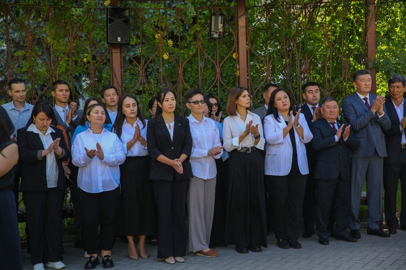
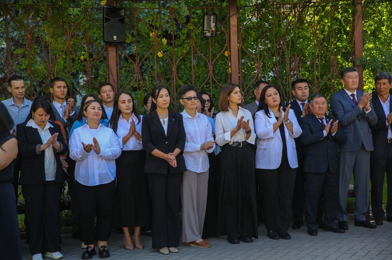
.jpg)
.jpg)
.jpg)
Жарыяланган күнү: 30.04.2025
Кыргыз Республикасынын Улуттук банкы “Кыргыз Республикасынын Улуттук банкынын айрым нормативдик укуктук актыларына өзгөртүүлөрдү киргизүү жөнүндө” токтом долбоорун коомдук талкууга чыгарат. Бул токтом долбоору Кыргыз Республикасынын мыйзамдарына (2025-жылдын 27-январындагы №28 “Маалыматка жетүү чөйрөсүндөгү айрым мыйзам актыларына өзгөртүүлөрдү киргизүү жөнүндө” жана №29 “Кыргыз Республикасындагы кепилдик фонддор жөнүндө” Мыйзамына өзгөртүүлөр тууралуу) ылайыкташтыруу максатында иштелип чыккан.
Токтом долбоору Улуттук банктын расмий интернет-сайтындагы “Улуттук банктын нормативдик актылары”/“Талкуу үчүн долбоорлор” бөлүмүндө жана Кыргыз Республикасынын нормативдик укуктук актыларынын коомдук талкуусунун Бирдиктүү порталында (koomtalkuu.gov.kg) жайгаштырылган.
Бул токтом долбоору боюнча пикир жана сунуштарды 2025-жылдын 23-майына чейин malmanbetova@nbkr.kg электрондук дарегине Word форматында жөнөтүү зарыл.
Жарыяланган күнү: 30.04.2025
Кыргыз Республикасынын Улуттук банкы 2025-жылдын 29-апрелинде Ачык акционердик коому “Евразиялык Сактык Банкы” тарабынан ички аудит кызматынын жетекчиси кызмат ордуна сунушталган Нурлан Каныбекович Шалтагуловдун талапкерлигин макулдашуу чечимин кабыл алды.
Жарыяланган күнү: 30.04.2025
Кыргыз Республикасынын мыйзамдарынын жана Улуттук банктын нормативдик-укуктук актыларынын талаптарын бузгандыгына байланыштуу, 2025-жылдын 1-5-майына чейин Бишкек шаары, Московская көчөсү 164/7 дарегинде жайгашкан «Сэнсон Гранд» ЖЧКсына 2023-жылдын 3-ноябрында берилген № 6622 лицензиянын аракеттери токтотулду.
Жарыяланган күнү: 30.04.2025
Улуттук банк алдамчылык коркунучтары тууралуу эскертет
Жаңы технологиялар колдонулуп жасалган алдамчылык учурларынын көбөйүшүнө байланыштуу (мисалы: Улуттук банктын кызматкерлеринин сүрөттөрүн мессенджерлерде пайдалануу, телефон номерлерин алмаштыруу, үндү бурмалоо ж.б.) төмөнкүдөй маалымат берилет.
1. Улуттук банк жарандарды чалып же кызматтык күбөлүктөрдү мессенджерлер аркылуу жибербейт.
2. Улуттук банк акча кайтарып берүүдө жардам сунуштабайт, кылмыш иштери боюнча маселелерди чечүү кызматын көрсөтпөйт.
3. Улуттук банк жарандарга эсеп ачпайт, жеке адамдарды тейлебейт жана акча операцияларын жүргүзбөйт.
Алдамчылар ар кандай шылтоолор менен (мисалы: кредит берилди, кылмыш иши козголот, эл аралык которуулар үчүн комиссия төлөнүшү керек, акчаны кайтарууга жардам ж.б.) жарандардын акчасын алуу максатын көздөшөт.
Алдамчылык ыкмалары улам жаңыланып турат, ошондуктан дайыма этият болуу жана сак болуу керек.
Улуттук банк белгисиз адамдар сунуштаган шектүү веб-шилтемелерге кирбөөгө, акча которбоого жана белгисиз булактардан келген маалыматтарды расмий байланыш каналдары аркылуу текшерүүгө чакырат.
Жарыяланган күнү: 29.04.2025
1. Кыргыз Республикасынын Улуттук банкы 2025-жылдын 24-апрелинде Жабык акционердик коому «Демир Кыргыз Интернэшнл Банк» тарабынан башкы бухгалтер кызмат ордуна сунушталган Тилек Марсович Аширбаевдин талапкерлигин макулдашуу чечимин кабыл алды.
2. Кыргыз Республикасынын Улуттук банкы 2025-жылдын 24-апрелинде Жабык акционердик коому «ЭкоИсламикБанк» тарабынан директорлор кеңешинин мүчөсү/директорлор кеңешинин төрагасынын орун басары кызмат ордуна сунушталган Баккелди Рахимович Тюменбаевдин талапкерлигин макулдашты.
3. Кыргыз Республикасынын Улуттук банкы 2025-жылдын 24-апрелинде Ачык акционердик коому «Мбанк» тарабынан көз карандысыз директор/Аудит комитетинин төрагасы кызмат ордуна сунушталган Азизбек Пазылбаевич Оморкуловдун талапкерлигин жактырды.
Жарыяланган күнү: 28.04.2025
Кыргыз Республикасынын Улуттук банксынын төрагасы Тургунбаев М.Ж.
Эл аралык валюта фондунун жана Дүйнөлүк банк Тобунун Жазгы жыйынына катышты
2025-жылдын 21–25-апрель күндөрү Кыргыз Республикасынын Улуттук банксынын төрагасы Тургунбаев М.Ж. АКШнын Вашингтон шаарында өткөн Эл аралык валюта фондунун (ЭВФ) жана Дүйнөлүк банк Тобунун (ДБТ) Жазгы жыйындарына катышты.
Жыйын алкагында Кыргыз Республикасынын Улуттук банкынын делегациясы ЭВФ, чет өлкөлүк банктар жана эл аралык финансы институттары менен эки тараптуу жолугушууларды өткөрдү. Жолугушууларда акча-кредит саясаты жана финансы туруктуулугун камсыз кылуу боюнча өз ара кызматташуу маселелери талкууланды.
Ошондой эле төрага Тургунбаев М.Ж. ЭВФ тарабынан Жакынкы Чыгыш, Кавказ жана Борбордук Азия өлкөлөрүнүн борбордук банктарынын жетекчилери үчүн уюштурулган иш-чараларга жана Кыргыз Республикасы мүчө болгон ЭВФтеги Швейцария добуш берүү тобунун жыйынына катышты. Жыйындарда дүйнөлүк экономиканын учурдагы жана жаңы чакырыктары жана ЭВФке мүчө өлкөлөрдүн артыкчылыктуу экономикалык саясат чаралары талкууланды.
 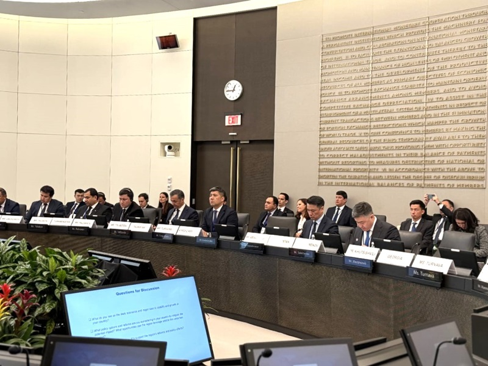
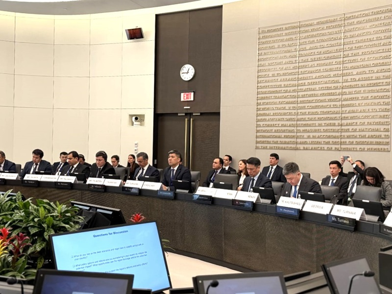
.jpg) 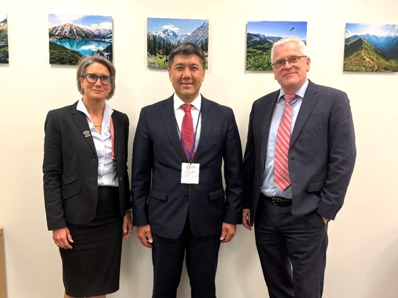
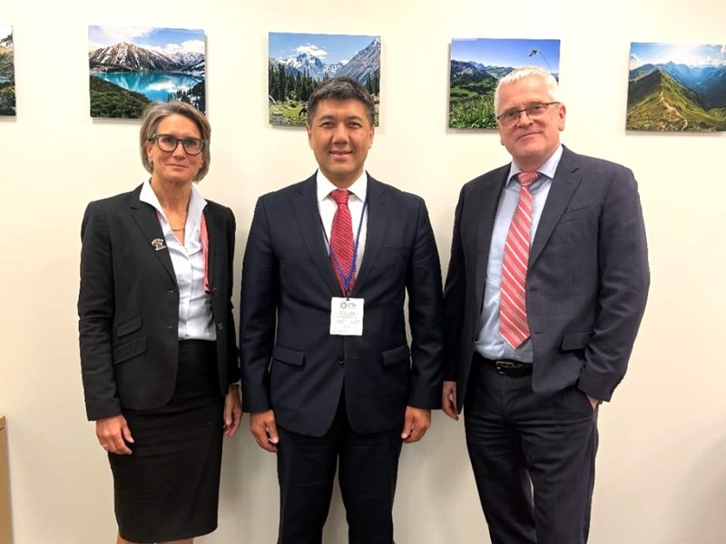
.jpg) 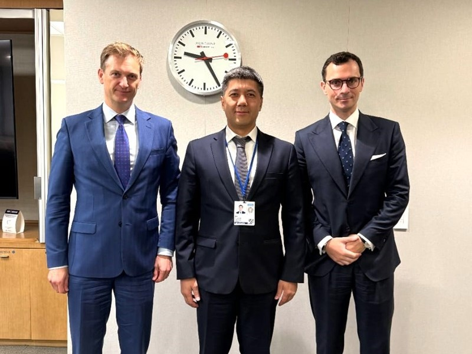
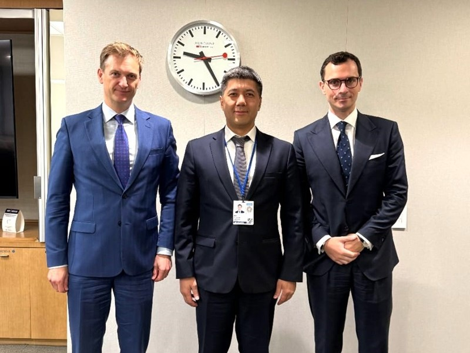
Жарыяланган күнү: 28.04.2025
МААЛЫМАТТЫК КАБАРЛАМА
Кыргыз Республикасынын Улуттук банкы
Кыргыз Республикасынын Улуттук банкы Улуу Ата Мекендик согуштагы Жеңиштин 80 жылдык мааракесине карата 2025-жылдын 28-апрелинен тарта «Тарыхый окуялар» сериясынан «Улуу Жеңишке – 80 жыл» аттуу күмүш коллекциялык тыйын чыгарууда.
9-май – Жеңиш күнү – ондогон жылдар бою биримдиктин, курман болгондорду эскерүүнүн жана согуштун ардагерлерине, эмгек майданында иштегендерге ыраазычылыктын күнү катары белгиленип келет. Улуу Ата Мекендик согуштагы эрдиктери үчүн 150 миңден ашуун кыргызстандык орден-медалдар менен сыйланышкан. 74 адамга Советтер Союзунун Баатыры наамы ыйгарылып, 34 адам даңктын үч даражадагы ордени менен сыйланган. Ошондой эле 8 миңден ашуун кыргызстандык Кыргыз ССР Жогорку Кеңешинин Ардак грамоталары менен сыйланышкан.
Курман болгондордун жана согушту башынан кечиргендердин элесине болгон милдет эч качан унутта калбашы керек.
«Улуу Жеңишке – 80 жыл» тыйынынын алдыңкы бетинде майрамдык салют түрүндө жасалгаланган «80» саны сүрөттөлгөн. Жогорку бөлүгүндө жылдызча, ал эми төмөн жагында кайгынын жана урматтоонун белгиси катары тасма менен курчалган кызыл гвоздик гүлдөрүнүн гүлчамбары чагылдырылган. Тыйындын айланасында «Улуу Жеңишке – 80 жыл / 80 лет Великой Победе» деген жазуу жайгашкан.
Арткы бетинде Кыргыз Республикасынын герби «2025» жана «1945» сандарынын арасында, тынчтыктын жана эркиндиктин символу болгон учуп бараткан көгүчкөндөрдүн фонунда жайгаштырылган. Айланасында «Кыргыз Республикасынын Улуттук банкы / Национальный банк Кыргызской Республики» деген жазуу берилген. Төмөнкү бөлүгүндө металлдын курамы (Ag 925), тыйындын чыгарылган жылы – «2025» жана салмагы (28,28 g) көрсөтүлгөн.
 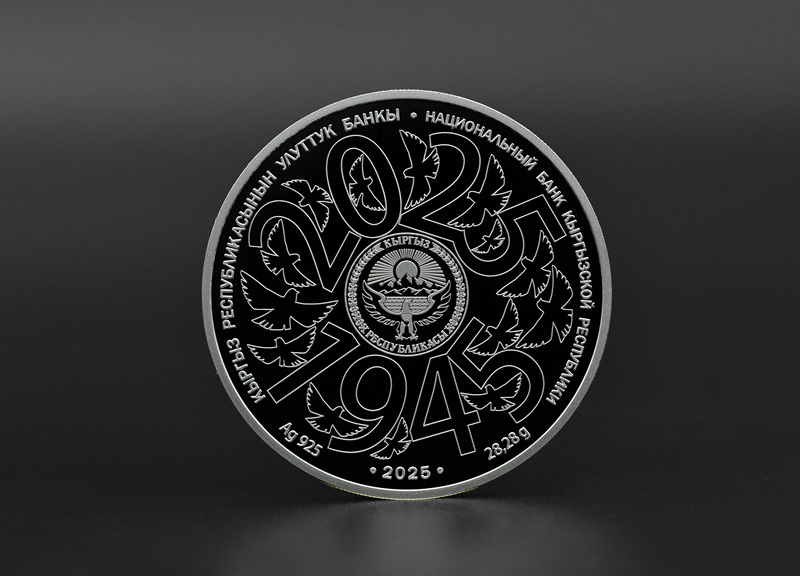
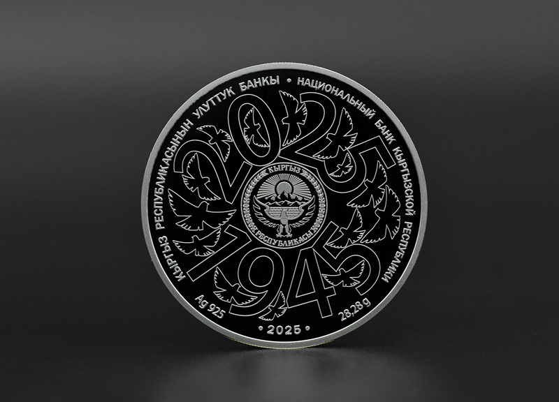
«Улуу Жеңишке – 80 жыл» коллекциялык тыйыны Кыргыз Республикасынын аймагында расмий төлөм каражаты статусуна ээ.
| Аты | Улуу Жеңишке – 80 жыл |
|---|---|
| Номиналы | 10 сом |
| Металл (курамы) | Ag 925 |
| Диаметри (мм) | 38,61 |
| Салмагы (г) | 28,28 |
| Аткаруусунун сапаты | Proof |
| Тиражы (даана) | 800 |
Коллекциялык тыйын акрил капсуласына салынган жана өзүнчө футлярга жайгаштырылып, сапат сертификаты менен коштолот.
Коллекциялык тыйынды сатып алуу Кыргыз Республикасынын Улуттук банк мекемелеринин кассаларында жумуш күндөрү саат 9:00дөн 14:00гө чейин, ошондой эле нумизматикалык баалуулуктарды сатуу боюнча расмий веб-сайттан жүргүзүлөт: www.numizmat.nbkr.kg
Жарыяланган күнү: 25.04.2025
2025-жылдын 24-апрелинде Кыргыз Республикасынын Улуттук банксынын Жалал-Абад облусундагы башкармалыгынын кызматкерлери Жалал-Абад шаарында жайгашкан «Билимкана-Жалалабад» жеке мектебинин жогорку класстарынын окуучулары үчүн пландуу көчмө лекция өткөрүштү.
Лекциянын жүрүшүндө Улуттук банктын өкүлдөрү Улуттук банктын ишмердүүлүгү, улуттук валюта – сомдун өнүгүү этаптары, улуттук валютанын банкнотторундагы негизги коргоо элементтери жана жараксыз акчаларды жарактуу акчаларга алмаштыруу эрежелери тууралуу айтып беришти.
Ошондой эле, акча сактоонун маанилүүлүгү, топтолгон каражаттарды сактоо жана көбөйтүүнүн ар кандай ыкмалары тууралуу маалымат берилди.

.jpg)